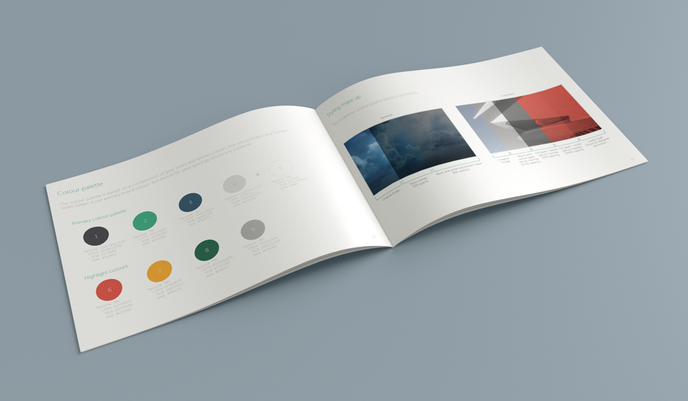
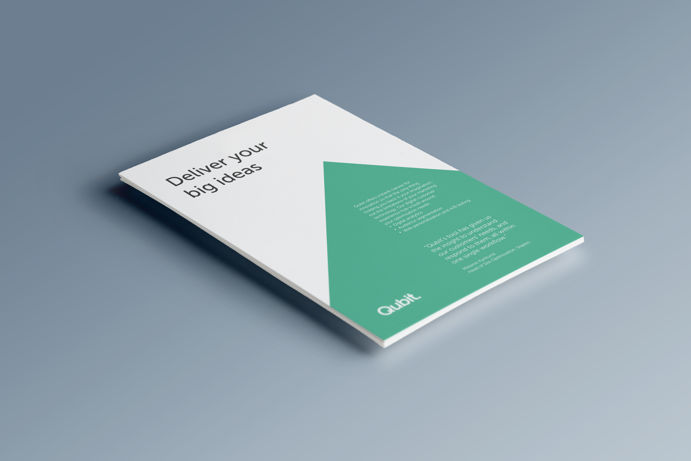
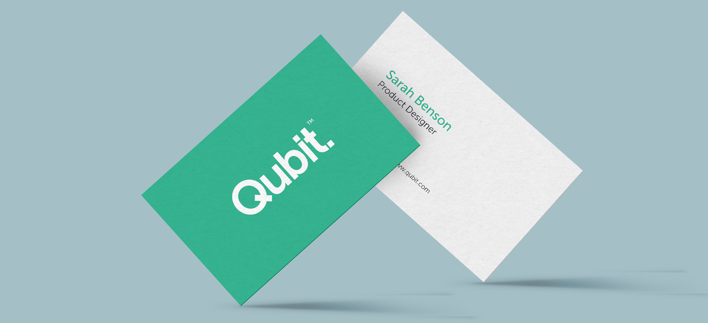
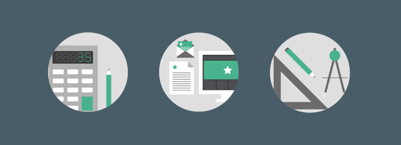
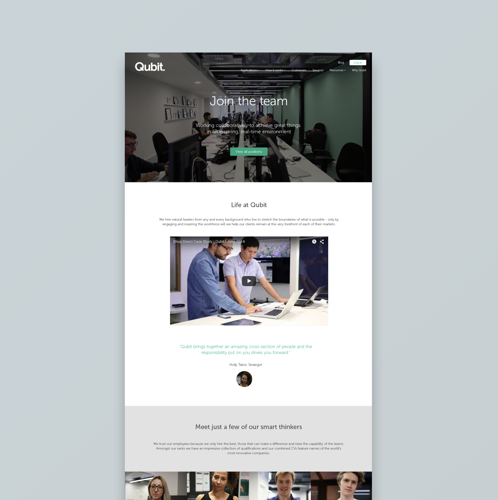

Visual Design
QUBIT MARKETING
Qubit is a web personalisation company. I joined as a freelance designer, being the sole designer for a while, and went on to lead a small team producing digital and physical assets to assist the sales team and grow the company’s reputation.
During my time in the marketing team I was heavily involved in a brand refresh and produced guidelines and updated styles for our marketing materials.
WHAT
Branding design
Web design
Iconography
Video and animation
Data visualisation

Spread from the brand guidelines covering the updated colours and image styles
BRAND GUIDELINES
In the rebrand we introduced a whole new colour palette, new image styling, and a new website. We designed the brand to have two sides: a technical side which used colour and shapes to convey very technical information as simply as possible, and a human centred side for showing real examples of the product in action. This side used photography and on-screen examples to bring the product to life.

Example of the new technical documentation design style


In the brand refresh we updated stationery and icons sets to reflect the new colours and style.
WEBSITE
A lot of the work with the website was behind the scenes. We spent time as a team going through the site structure, organising the content so it was easy to navigate for different types of prospect.

Careers page from the updated website